🌐 ¿Qué es ECMAScript?
ECMAScript es una especificación estándar desarrollada por ECMA International (ECMA-262) que define cómo debe funcionar un lenguaje de scripting, y es la base sobre la cual se desarrolla JavaScript. Es decir, ECMAScript establece las reglas y características que deben seguir todos los navegadores y motores de JavaScript, asegurando que un mismo código funcione igual en cualquier entorno compatible.
📌 ¿Por qué es importante?
Permite interoperabilidad entre navegadores (Chrome, Firefox, Safari, etc.). Establece una base común para lenguajes como JavaScript, JScript y ActionScript. Introduce nuevas funciones con cada versión para mejorar el lenguaje y facilitar el desarrollo.
Control De Versiones
✅ ECMAScript 1 (1997)
Definición:
Establecer una base común para que los navegadores implementen JavaScript de forma uniforme.
🎯 ¿Para qué fue creada?
Establecer una base común para que los navegadores implementen JavaScript de forma uniforme.
🛠️ ¿Para qué sirve?
Para garantizar que el código funcione igual en todos los navegadores.
✨ Características:
Tipos de datos: String, Number, Boolean, Object.
Control de flujo: if, for, while, switch
Funciones básicas
✅ ECMAScript 2 (1998)
Definición:
Versión con ajustes editoriales sin nuevas características técnicas.
🎯 ¿Para qué fue creada?
Para mantener sincronización con los estándares internacionales ISO/IEC.
🛠️ ¿Para qué sirve?
Solo para correcciones editoriales, sin impacto en el código.
✅ ECMAScript 3 (1999)
Definición:
Una versión más avanzada que consolidó JavaScript como lenguaje real de programación.
🎯 ¿Para qué fue creada?
Para introducir funciones esenciales que mejoraran la robustez y el manejo de errores.
🛠️ ¿Para qué sirve?
Facilita el desarrollo de aplicaciones web más complejas y robustas.
✨ Características:
Manejo de errores con try...catch
Expresiones regulares
Nuevos métodos para cadenas y arrays
💡 Ejemplo:
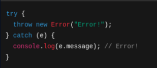❌ ECMAScript 4 (Cancelada)
Definición:
Versión ambiciosa con características como clases, tipos, módulos... que fue cancelada.
🎯 ¿Para qué fue creada?
Para transformar JavaScript en un lenguaje completamente orientado a objetos.
🛠️ ¿Por qué no sirvió?
Era demasiado compleja y no hubo consenso entre desarrolladores ni empresas como Microsoft.
✅ ECMAScript 5 (2009)
Definición:
Versión establecida en plena era de aplicaciones web dinámicas.
🎯 ¿Para qué fue creada?
Para mejorar la seguridad del código y estandarizar el desarrollo.
🛠️ ¿Para qué sirve?
Permite mayor control de objetos, arrays y funciones.
✨ Características:
Modo estricto ('use strict')
Nuevos métodos: map, filter, reduce
JSON nativo
💡 Ejemplo:
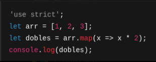✅ ECMAScript 6 (2015) – ES6
Definición:
La versión que transformó JavaScript en un lenguaje moderno y potente.
🎯 ¿Para qué fue creada?
Para facilitar la programación modular, legible y escalable.
🛠️ ¿Para qué sirve?
Permite crear aplicaciones más limpias, estructuradas y mantenibles.
✨ Características:
let, const
Arrow functions () =>
Clases, módulos, template strings
Promesas, desestructuración, spread/rest
💡 Ejemplo:
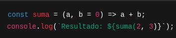✅ ECMAScript 2016 (ES7)
Definición:
Actualización pequeña pero útil.
🎯 ¿Para qué fue creada?
Para añadir funciones básicas que simplifican tareas comunes.
🛠️ ¿Para qué sirve?
Facilita búsquedas en arrays y cálculos matemáticos.
✨ Características:
Array.includes()
Exponenciación **
💡 Ejemplo:
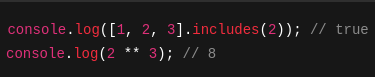✅ ECMAScript 2017 (ES8)
Definición:
Versión que introdujo asincronía más simple.
🎯 ¿Para qué fue creada?
Para mejorar el trabajo con funciones asíncronas.
🛠️ ¿Para qué sirve?
Permite escribir código asincrónico más fácil de leer con async/await.
✨ Características:
async/await
Object.entries(), Object.values()
padStart() / padEnd()
💡 Ejemplo:
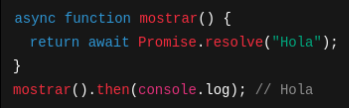✅ ECMAScript 2018 (ES9)
Definición:
Mejoras en objetos, promesas y expresiones regulares.
🎯 ¿Para qué fue creada?
Para completar soporte moderno a objetos y promesas.
🛠️ ¿Para qué sirve?
Mejora la legibilidad y limpieza del código.
✨ Características:
Rest/Spread en objetos
Promise.prototype.finally()
💡 Ejemplo:
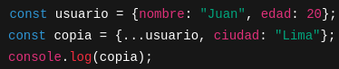✅ ECMAScript 2019 (ES10)
Definición:
Versión centrada en arrays y objetos.
🎯 ¿Para qué fue creada?
Para facilitar el tratamiento de arrays anidados y manipulación de datos.
🛠️ ¿Para qué sirve?
Permite a los desarrolladores trabajar con arrays complejos fácilmente.
✨ Características:
.flat(), .flatMap()
Object.fromEntries()
💡 Ejemplo:
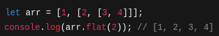✅ ECMAScript 2020 (ES11)
Definición:
Versión moderna que mejora el acceso a propiedades y manejo de valores nulos.
🎯 ¿Para qué fue creada?
Para evitar errores cuando accedemos a propiedades no definidas.
🛠️ ¿Para qué sirve?
Aumenta la seguridad y legibilidad del código.
✨ Características:
Optional chaining (?.)
Nullish coalescing (??)
💡 Ejemplo:
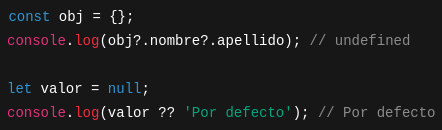✅ ECMAScript 2021 (ES12)
Definición:
Versión que refina operadores y mejora strings.
🎯 ¿Para qué fue creada?
Para reducir líneas de código y aumentar claridad.
🛠️ ¿Para qué sirve?
Permite escribir condiciones más limpias y directas.
✨ Características:
replaceAll()
Asignadores lógicos: &&=, ||=, ??=
Separadores numéricos (1_000_000)
💡 Ejemplo:
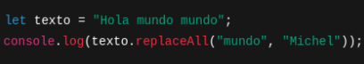✅ ECMAScript 2022 (ES13)
Definición:
Versión con enfoque en mejoras de sintaxis y acceso por índices negativos.
🎯 ¿Para qué fue creada?
Para simplificar el acceso a valores en arrays y mejorar los módulos.
🛠️ ¿Para qué sirve?
Optimiza el manejo de listas, objetos y módulos.
✨ Características:
.at()
Object.hasOwn()
await en nivel superior
💡 Ejemplo:
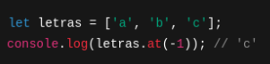✅ ECMAScript 2023 (ES14)
Definición:
Última versión estable (hasta 2024).
🎯 ¿Para qué fue creada?
Para completar el soporte a estructuras avanzadas de datos y sintaxis moderna.
🛠️ ¿Para qué sirve?
Brinda mayor flexibilidad en búsquedas dentro de arrays.
✨ Características:
findLast(), findLastIndex()
Mejoras en clases privadas
💡 Ejemplo:
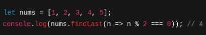✅ ¿Cómo usar ECMAScript?
🧩 Navegadores modernos
Hoy en día, casi todos los navegadores modernos soportan desde ES6 en adelante.
🧪 Herramientas para versiones viejas Babel.js:
Transforma código moderno a versiones anteriores para compatibilidad.
Webpack o Vite:
Herramientas para agrupar y transformar proyectos JavaScript.
📦 Recomendaciones para usar ECMAScript moderno:
✅ Usa let/const en vez de var
✅ Prefiere arrow functions por su claridad.
✅ Utiliza template strings para concatenaciones.
✅ Usa módulos (import/export) para organizar tu código.
✅ Usa async/await en vez de .then() para asincronía.